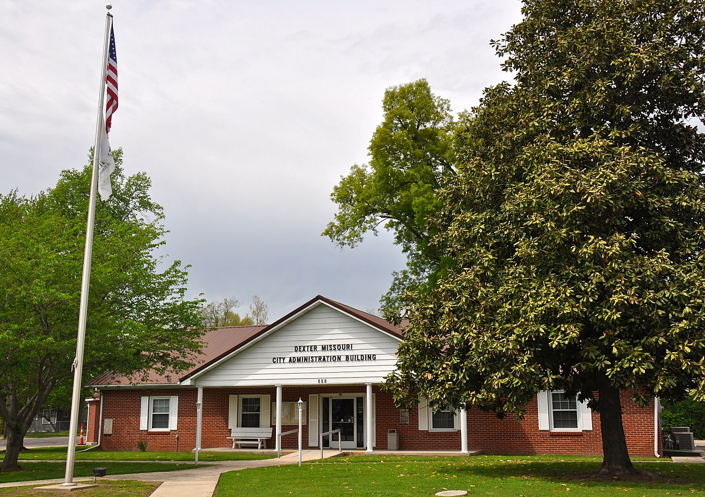
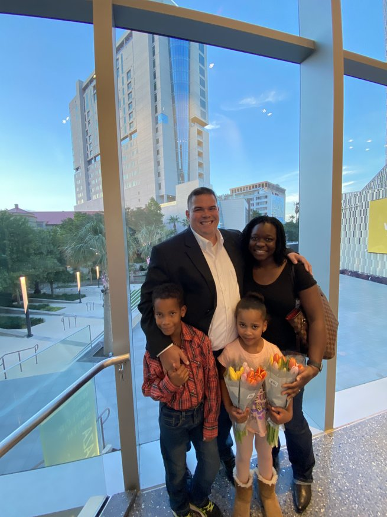

Hi there, my name is Ted.

Hi there, my name is Ted.
I turn coffee and breakfast tacos into well thought out, elegant, efficient, scalable applications and infrastructure.
I'm a DevOps Engineer with a Software Development background and engineering leadership experience. I’m passionate about implementing technically-challenging, value-added projects while optimizing up-time, performance, and cost efficiency for existing applications.
You can take a look at projects I've worked on and my resume above, or click through below to learn a little more about me and my background.


Annapolis Graduate
With a Bachelor's of Science in Political Science, I'm well-rounded enough to be technical, to communicate, or mix and match as you see fit.

Technical Leader


DevOps Engineer

DevOps Engineer